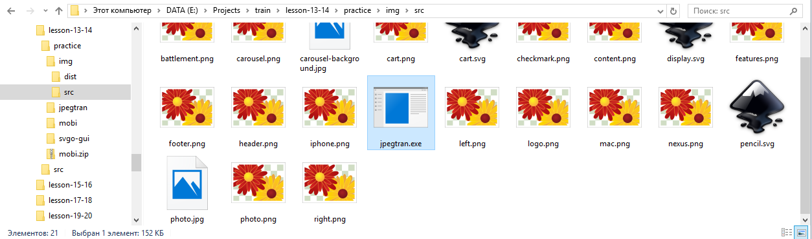
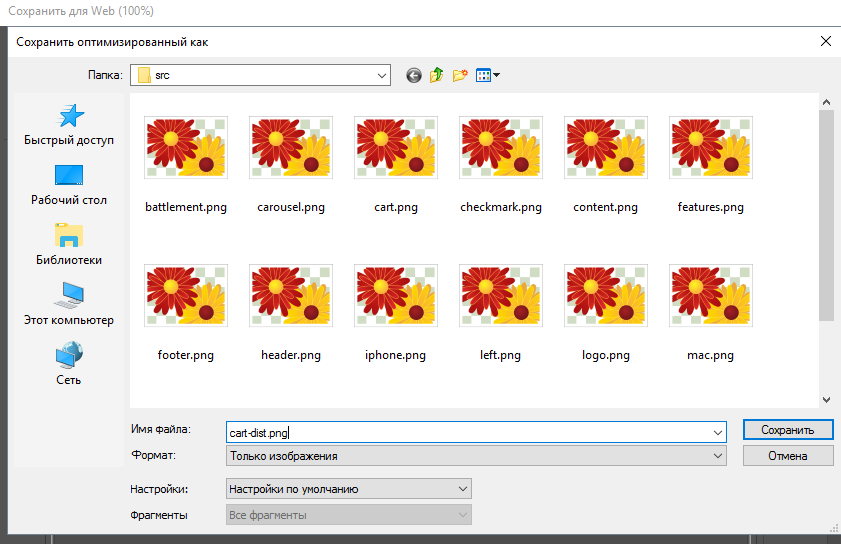
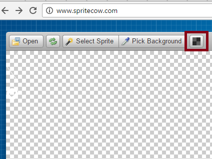
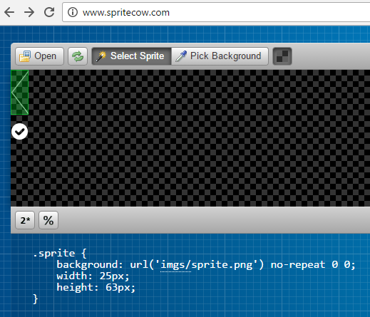

Скорость загрузки страницы зависит от объема данных, которые необходимо загрузить чтобы её отобразить. Чем больший объем загружаемых данных, тем медленне страница грузится.
Статистика говорит о том, что средний вес страниц постоянно растёт, кроме того изображения занимают большую часть в данных, которые загружаются — The Growth of Web Page Size
Анализ быстродействия сайта
Существуют автоматизированные инструменты, которые анализируют быстродействие сайта и дают рекомендации по его оптимизации.
Гибридный анализ предоставляет сервис GTmetrix который анализирует сайты используя два наиболее популярных инструмента:
- Google Page Speed, который так же доступен как расширение Chrome.
- YSlow от Yahoo, так же доступен как расширение для Chrome.
После анализа сайта, сервис GTmetrix предлагает скачать оптимизированную версию каждого изображения, которое по его мнению необходимо сжать.
Прекрасная статья от специалиста Google по оптимизации Ilya Grigorik — Оптимизация изображений
Сжатие изображений
Векторные изображения
Все современные браузеры поддерживают векторные изображения в формате SVG. SVG изображение — это текстовый файл на основе XML (похож на HTML - с тегами и атрибутами). Эти текстовые файлы нужно минифицировать для уменьшения размера и сжимать архиватором GZIP — это должен делать сервер.
Сжимать SVG позволяет инструмент SVGO, для него есть графическая оболочка GUI for SVGO.
Задание #1.1
- Скачать архив с проектом mobi.zip (тут одна страница) и разархивировать себе на рабочий стол.
-
Создать папку отдельную от проекта папку img и в ней две подпапки: src и dist.

- Скопировать все изображения из проекта mobi (из подпапки img) в новую пустую подпапку src отдельной папки img.
-
Скопировать все SVG изображения из подпапки src отдельной папки img и вставить их в подпапку dist.
-
Скачать программу SVGO GUI (графическая оболочка для SVGO) отсюда — svgo-gui-win-ia32.7z, разархивировать папку, найти в ней файл svgo-gui.exe и запустить его, убедиться что открывается окно:

-
В папке dist выделить все SVG изображения:

Обратить внимание на размер выделенных файлов — 2.75 КБ -
Перетащить выделенные изображения в программу SVGO GUI

Обратить внимание на колонку profit. -
Выделить все изображения в папке dist
и убедиться что размер файлов уменьшился — 2.59 КБ
Когда изображений не много и они не сильно объемные эффект не сильно заметен, при изменени масштаба — увеличении количества файлов и их веса, оптимизация начинает приносить большую пользу.
Растровые изображения
Растровые изображения (JPG, PNG, GIF) — изображения состоящие из пикселей. Возможно два типа сжатия данных растровых изображений:
- С потерями — когда удаляются некоторые данные пикселей, это возможно из-за особенностей человеческого зрения (изменения попросту будут слабо заметны).
- Без потерь — когда все данные остаются, а удаляется ненужная информация не влияющая на качество.
JPG
При использовании сжатия с потерями, например JPEG, вы сможете выбрать настройки качества (вроде ползунка Сохранить для Web в Adobe Photoshop). Обычно это значение от 1 до 100, которое определяет применение алгоритмов сжатия с потерями и без. Не бойтесь снижать качество: часто изображение по-прежнему хорошо выглядит, а размер файла становится значительно меньше.
Визуально можно увидеть как изображение изменится при изменении уровня качества прямо в окошке сохранения для Web.
На практике оптимальным является использование значение 72 для сжатия для изображения формате JPG.
Если изображение размытое, то можно использовать и более низкое значение, кроме того можно использовать ползунок Размытие (blur) и выставить значение при котором визуально изображение не ухудшится.
Для дальнейшего сжатия рекомендуется использовать утилиту jpegtran либо онлайн сервисы например TinyJPG.
Задание #1.2
-
Скачать файл photo.png и скопировать его в созданную ранее папку src в папке img.
Обратить внимание что размер изображения 923 КБ, что является довольно большим значением. Фотографии среднего размера должны занимать не больше 250 Кб, если идёт речь о фото с хорошим качеством. -
Откройте изображение photo.png в Photoshope-е.
-
Зайти в меню Файл, выбрать опцию Экспортировать, затем выбрать опцию Сохранить для Web или нажать Ctrl Alt Shift S
-
В диалоге выбрать формат сохранения JPG (высокое качество) и уровень качества 72:
Нажать кнопку Сохранить -
Сохранить в папку src созданную ранее:
-
Открыть папку и убедиться что изображение теперь весит 206 КБ
-
Зайти на страницу http://jpegclub.org/jpegtran/ и скачать jpegtran.exe, затем скопировать файл jpegtran.exe в папку src:
 -
В папке src навести курсор на пустое место и нажать правую кнопку мыши вместе с зажатой клавишей Shift и выбрать пункт контекстного меню Открыть окно команд — при этом откроется командная строка в которой можно будет использовать утилиту jpegtran.exe:
-
Скопировать строчку
jpegtran -copy none -optimize -outfile photo-dist.jpg photo.jpg -
Вставить в командную строку нажав правой кнопкой на командной строке и выбрать Вставить или нажать Ctrl V:
Мы указали параметры сжатия и имя файла для сжатия (в конце команды) и выходной файл который будет новым сжатым файлом (указывается после параметра -outfile) -
Нажать Enter
-
Обратить внимание что размер нового файла photo-dist.jpg уменьшился на 1 КБ
- Открыть файлы photo.jpg и photo-dist.jpg и убедиться что визуально обе фотографии выглядят идентично.
-
Скопировать файл photo-dist.jpg в папку dist
{kind=link}
PNG
В Photoshop-е возможно уменьшить количество используемых в палитре PNG-8 цветов, однако это приведёт к потере качества изображения, хотя размер уменьшится.
Задание #1.3
-
Открыть папку src.

Обратить внимание что размер изображения cart.png составляет 74.8 КБ что довольно много для такого небольшого изображения. -
Открыть в Photoshop-е изображение cart.png
-
В меню Photoshop-а выбрать Изображение затем Коррекция затем Постеризация
-
В открывшемся диалоге выставить значение 70 и нажать OK

При выставлении уровня постеризации необходимо следить чтобы изображение не сильно исказилось. -
Перейти в режим сохранения для Web и выбрать формат PNG-24 (Ctrl Alt Shift S)

-
Сохранить изображение под именем cart-dist.png в той же папке src
 -
После сохранения обратить внимание что размер изображения cart-dist.png составляет 48.7 КБ
Открыть изображение cart-dist.png и убедиться что оно практически не отличается от cart.png
-
Скопировать изображение cart.dist в папку dist
PNG-8
Для изображений в формате PNG-8 можно уменьшать палитру цветов.
Главное отличие PNG-8 от PNG-24 в том что по умолчанию полупрозрачность в нём 100%-я, нет непрозрачных наполовину пикселей.
Рекомендуется использовать утилиты для сжатия PNG изображений в форматах PNG-8 и PNG-24:
- optipng — сжимает без потерь
- pngquant — сжимает с потерями
- специализированные сервисы для сжатия, например punypng
Задание 1.4
- С сайта http://optipng.sourceforge.net/ скачать optipng-0.7.6-win32.zip
-
Разархивировать папку и скопировать в буфер обмена optipng.exe, скопировать его в папку dist.
-
В папке src выделить и скопировать все PNG файлы обратив внимание на размер 1.73 МБ:
-
Вставить их в папку dist
-
В папке dist кликнуть на свободное место правой кнопкой мыши с зажатой кнопкой Shift и выбрать "Открыть окно команд"
-
Скопировать код запуска утилиты по оптимизации PNG изображений
optipng -o7 *.png
-o7 — флаг указывающий наивысший уровень компрессии -
Вставить в командную строку код и нажать Enter
-
Дождаться окончания процесса оптимизации
-
Выделить все PNG изображения в папке dist и убедиться что размер стал меньше — 1.67 МБ
- В названиях с суффиксом -dist убрать суффикс и перезаписать эти изображения.
- Просмотреть все изображения — нет ли битых картинок.
- Все изображения из папки dist скопировать в папку img проекта mobi.
GIF
Рекомендуется не использовать GIF, потому что формат PNG сжимается лучше, единственный вариант когда вам может понадобиться GIF это для сохранения анимации — для этого подойдёт анимированный GIF который обладает поддержкой всеми браузерами.
Не бойтесь экспериментировать с параметрами компрессоров. Установите разные настройки качества, выберите подходящий вариант и примените его к другим похожим изображениям на сайте. Но помните: не все графические ресурсы нужно сжимать одним и тем же методом!
Спрайт это изображение объединяющее в себе несколько других изображений.
К примеру Google использует такой спрайт в одном из своих продуктов:
Использование спрайтов позволяет уменьшить количество обращений к серверу и при одном запросе к изображению-спрайту, после его загрузки в браузер окажутся все нужные изображения.
В древние времена их использовали для загрузки изображений включающих все состояния кнопок — https://css-tricks.com/examples/Sprites+SlidingDoors-Button/.
А в более поздние древние времена некоторые известные компании размещали в них все элементы основной навигации — http://web.archive.org/web/20080104132100/http://www.apple.com/.
Статья из древних времён — CSS Sprites: What They Are, Why They’re Cool, and How To Use Them.
Спрайты так же просто созданы для анимации:
See the Pen Steps Animation by Aleksey Korovin (@alekskorovin) on CodePen.
Спрайты в формате PNG
Для создания спрайтов больше всего подходит формат PNG-24 — он хорошо сжимается и поддерживает полупрозрачность.
Задание 2.1
- Открыть Photoshop и нажать Ctrl N.
-
Задать имя файла sprite а размеры: 25 x 100 px, задать содержимое фона Прозрачный фон и нажать OK
-
Из папки проекта mobi в файл sprite перетащить изображение left.png в Photoshope в sprite.
-
Используя кнопку вверх подвинуть изображение left.png вверх и нажать Ctrl Enter
-
Из папки проекта mobi в файл sprite перетащить изображение checkmark.png в Photoshope в sprite.
-
Используя кнопку вниз подвинуть изображение checkmark.png вниз и нажать Ctrl Enter
-
Нажать Ctrl Alt Shift S и сохранить в папке img проекта mobi изображение sprit.png в формате PNG-24
Для обновления стилей с помощью спрайтов полезно использовать сервисы сообщающие координаты того или иного изображения, например SpriteCow
Задание 2.1
- Открыть сервис http://www.spritecow.com/.
-
Из папки img проекта mobi перетащить изображение sprite.png прямо в браузере в область где написано open image
-
Нажать кнопку Toggle Dark Background чтобы увидеть наш спрайт более ясно:

-
Начиная с левого верхнего угла выделить верхнюю часть спрайта и убедиться что сгенерирован CSS код для стрелки влево:
 -
Открыть main.css в редакторе кода и обновить CSS-код в правилах для стрелки:
.carousel-control { position: absolute; width: 2.5rem; height: 6.3rem; top: 50%; margin-top: -3.2rem; background: url(../img/sprite.png) no-repeat; cursor: pointer; } - В новой вкладке открыть страницу index.html из проекта mobi в браузере и убедиться что карусель отображается нормально.
-
На странице со SpriteCow выделить теперь нижнее изображение
- Обратить внимание на координаты изображения: -1px -75px
-
В редакторе кода с открытым main.css обновить стили для правила псевдоэлемента кнопки:
Было добавлено небольшое смещение чтобы изображение стало выровненым..carousel-slides .carousel-button:before { content: ''; width: 2.7rem; height: 2.7rem; background: #5094f2 url(../img/sprite.png) no-repeat 1px -73px; border-radius: 50%; position: absolute; left: 1.1rem; top: 50%; margin-top: -1.35rem; } - Сохранить таблицу стилей
- Обновить страницу index.html в браузере и убедиться с помощью панели длл разработчика что карусель выглядит как положено и вместо двух изображений используется один sprite.png.
Спрайты в формате SVG
Спрайты в формате SVG можно делать так же как и PNG-спрайты, т.е. размещать их на полотне и задавать соответствующию позицию фона для каждого изобраений.
Так же существует способ при котором все изображения внутри SVG располагаются в элементах с уникальным атрибутом id и для вывода этого изображения необходимо указать путь к SVG файлу и в конце указать #id_изображения:
See the Pen Example of SVG sprites by Aleksey Korovin (@alekskorovin) on CodePen.
Когда SVG изображение вставлено в HTML-код его можно перекрашивать используя CSS.
See the Pen Css SVG hover color by Aleksey Korovin (@alekskorovin) on CodePen.
JavaScript это язык программирования который активно развивается в последние годы. JavaScript изначально проектировался как язык небольших скриптов-сценариев выполняющихся налету, в браузерах он поддерживался наряду с VisualBasic, но затем стал единоличным языком для веб-страниц.
Наиболее авторитетный ресурс на русском языке Javascript.ru Ильи Кантора.
С помощью JavaScript возможно:
- Реагировать на события пользователя
- Динамически строить части веб-страницы
- Запоминать настройки пользователя
- Рассчитывать размеры окна браузера и выводить сообщения в центр экрана
- Рассчитывать размеры всех элементов страницы
- Манипулировать частями страницы
- Подгружать данные с помощью AJAX-запросов и обновлять отдельные части страницы
- Создавать одностраничные приложения используя возможности якорей
- Создавать диалоги и модальные окна
- Можно рисовать динамические картинки
- Переадресовывать пользователя на другую страницу
- и многое другое
Компонент gallery
Этот компонент позволяет просматривать коллекцию изображений в максимально удобном виде.
Мы подключим популярную и надёжную библиотеку Fotorama для создания галереи изображений. Эта библиотека прекрасно поддерживат мобильные устройства и её внешний вид можно удобно менять.
Задание #3.1
- Скачать html-файл gallery.html.
- Открыть его в браузере и убедиться что отображаются изображения.
- Открыть gallery.html в редакторе кода и добавить в элементе head строку
<link href="http://cdnjs.cloudflare.com/ajax/libs/fotorama/4.6.4/fotorama.css" rel="stylesheet" /> -
Перед закрывающим тегом </body> добавить следующие две строки:
<script src="http://ajax.googleapis.com/ajax/libs/jquery/1.11.1/jquery.min.js"></script> <script src="http://cdnjs.cloudflare.com/ajax/libs/fotorama/4.6.4/fotorama.js"></script> - Обновить страницу gallery.html в браузере и убедиться что компонент заработал.
Компонент popup
Этот компонент выводит поверх всей страницы окно с возможностью закрытия в котором может быть что угодно, от видео до формы либо какого-то сообщения.
Особенность скрипта, в том что он рассчитывает координаты вывода окна в центр браузера и содержит функциональность закрытия окна.
Мы подключим jQuery плагин jQuery Popup Overlay.
Задание #3.2
- Скачать HTML-файл popup.html.
- Открыть его в браузере и убедиться что у нас есть две кнопки и заголовки с параграфом.
- Открыть его в редакторе кода
-
В элементе head добавить следующий код:
<style> #my_popup { padding: 1rem; background-color: #f5f5f5; border: 1px solid #e3e3e3; border-radius: 4px; } </style> - Перед закрывающим тегом </body>
разместить следующий код:
Сохранить HTML<script src="https://code.jquery.com/jquery-1.8.2.min.js"></script> <script src="https://cdn.rawgit.com/vast-engineering/jquery-popup-overlay/1.7.13/jquery.popupoverlay.js"></script> <script> $(document).ready(function() { $('#my_popup').popup(); }); </script> - Обновить страницу в браузере и убедиться что при нажатии на кнопку Открыть popup открывается окно.
Борьба с динамическим контентом.
С динамическим контентом возникают некоторые проблемы, которые в основном довольно легко решить используя CSS стили. Основные проблемы:
- Длинные строки или слова без пробелов
- Много строк, больше чем рассчитывал верстальщик
- Специальные символы: ™ ® & — и другие
- Размер изображений не такой как предполагалось
- Выравнивание фоновых изображений
Длинные строки или слова без пробелов
Если текст должен выводиться в одну строку, то в CSS есть возможность запретить перенос слов на другую строку, а затем с помощью дополнительных свойств можно добавить поведение при котором если текст шире контейнера в конце текст обрывается троеточием.
See the Pen Control long one line string by Aleksey Korovin (@alekskorovin) on CodePen.
Много строк, больше чем рассчитывал верстальщик
Если задать свойство overflow: auto — это добавить контейнеру возможость отобразить полосы прокрутки если содержимое не помещается.
See the Pen Control multi line strings by Aleksey Korovin (@alekskorovin) on CodePen.
Кроме того для многострочных текстов есть плагины позволяющие динамически добавлять троеточие если текст превышает максмальную высоту контейнера, например http://dotdotdot.frebsite.nl/.
Спецсимволы
Существуют таблицы спецсимволов, в которых вы можете найти необходимый значок и его эквивалент в HTML формате, например вот таблица спец. символов HTML Entities.
Наиболее часто встречающиеся спецсимволы:
- © — ©
- ® — ®
- ™ — ™
Размер изображений
В CSS можно задать максимальные размеры контейнера, содержащего изображение, при этом можно добавить overflow: hidden и если изображение будет вылезать за рамки отведенной области, оно обрежется. Кроме того при заданном стиле img { max-width: 100%; } изображение никогда не будет шире своего контейнера.
Выравнивание фоновых изображений
Для выравнивания фонового изображения, существуют два значения свойства background-position позволяющие покрыть контейнер полностью либо так чтобы изображение вмещалось:
-
cover — полностью покрыть изображением контейнер
See the Pen Background-cover by Aleksey Korovin (@alekskorovin) on CodePen.
-
contain — изображение полностью видимо в контейнере
See the Pen Background contain by Aleksey Korovin (@alekskorovin) on CodePen.
LESS
Основы Less
Компиляция LESS
Для компиляции LESS можно использовать приложение http://winless.org/ которое позволяет указать что компилировать и даёт настройки самой компиляции в CSS.
Установка Winless и проверка компиляции
- Скачать less.zip — разархивировать папку.
- Скачать программу Winless и установить её.
-
После запуска программы — указать папку less и задать выходную папку для компиляции css для файла main.less
- Убедиться что в папке css скомпилировался master.css
- Открыть master.css и ознакомиться с его содержанием.
Домашнее задание
- Объединить изображения проекта mobi в спрайт, обновить CSS подключив вместо отдельных изображений спрайт-изображение.
- Опционально - сделать LESS версию стилей для проекта mobi вынеся все цвета и размеры шрифтов в переменные.
- Начать либо пройти курс Знакомство с SVG.
- Закончить все текущие домашние задания!